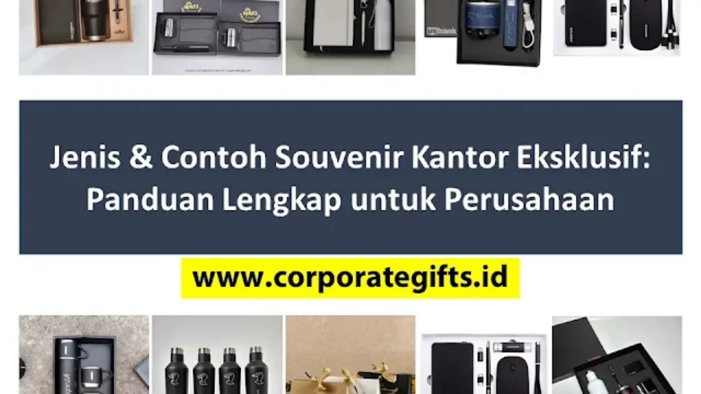

Corporate Gifts ID - Jenis dan contoh souvenir kantor eksklusif yang paling populer untuk corporate gifting meliputi pulpen premium, gadget teknologi pintar, produk kulit asli, hingga perlengkapan meja eksklusif. Memilih produk souvenir yang tepat sesuai dengan profil penerima dan identitas brand perusahaan sangat penting untuk meningkatkan citra profesional, memperkuat loyalitas klien VIP, dan memotivasi jajaran eksekutif maupun karyawan.
Poin Kunci Souvenir Kantor Eksklusif:
- Pulpen & Alat Tulis Metal: Dilengkapi ukiran logo presisi atau grafir nama personal untuk impresi eksekutif elegan.
- Gadget Fungsional Berkelas: Powerbank fast charging dan wireless charger meja kerja untuk menunjang produktivitas profesional modern.
- Produk Kulit Mewah: Buku agenda bersampul kulit PU/asli dan card holder tahan lama yang memancarkan prestise tinggi.
- Lifestyle & Meja Kerja: Tumbler stainless steel food grade dan desk organizer estetik penunjang subtle branding harian.
Jenis Souvenir Kantor Eksklusif Terpopuler
Berikut adalah kategori utama souvenir kantor premium yang dinilai paling efektif dan sering digunakan oleh korporasi berskala nasional maupun multinasional:
1. Pulpen dan Alat Tulis Premium
- Pulpen berbahan dasar logam (metal alloy) dengan finishing mewah seperti matte black, chrome glossy, atau rose gold.
- Dapat dipersonalisasi melalui ukiran (laser engraving) logo instansi atau nama spesifik masing-masing penerima secara presisi.
- Sangat cocok diberikan kepada klien VIP, jajaran direksi, atau sebagai bentuk plakat penghargaan prestasi internal instansi.
2. Gadget & Aksesori Teknologi
- Produk fungsional masa kini seperti powerbank berkapasitas tinggi dengan smart IC protection, wireless charger pad meja kerja, headset bluetooth, atau TWS earbuds dengan branding perusahaan yang rapi.
- Sangat relevan untuk perusahaan di sektor teknologi, perbankan, telekomunikasi, atau pelengkap event korporat bertema inovatif.
- Memberikan kesan bahwa korporasi selalu adaptif terhadap perkembangan teknologi modern dan peduli pada mobilitas penerimanya.
3. Produk Kulit Premium
- Barang-barang eksklusif seperti buku catatan (notebook agenda) bersampul kulit premium, dompet kartu nama (card holder), paspor holder, atau map folder dokumen eksekutif.
- Secara instan menghadirkan impresi profesional, mapan, dan berkelas tinggi.
- Pilihan ideal untuk corporate gift perayaan hari jadi (anniversary) institusi bagi klien loyal atau mitra bisnis strategis.
4. Lifestyle & Peralatan Meja Eksklusif
- Produk gaya hidup seperti tumbler stainless steel penahan suhu ganda (vacuum insulated), mug keramik berdesain minimalis, desk organizer elegan, hingga lampu meja pintar serbaguna.
- Memberikan fungsi praktis yang dimanfaatkan setiap hari sekaligus memperkuat paparan branding perusahaan secara halus (subtle marketing).
Contoh Souvenir Kantor Eksklusif yang Populer
Untuk memudahkan proses pemilihan barang, berikut tabel komparasi contoh souvenir kantor eksklusif beserta keunggulan utamanya:
| Kategori | Contoh Produk | Keterangan / Keunggulan |
|---|---|---|
| Pulpen & Alat Tulis | Pulpen metal ukir laser, set penholder eksklusif | Elegan, mewah, sangat mudah dipersonalisasi nama penerima |
| Gadget & Teknologi | Powerbank fast charging, wireless charger pad | Sangat fungsional, menonjolkan citra modern dan kekinian |
| Produk Kulit | Notebook kulit, card holder, map dokumen eksekutif | Tahan lama, bernilai estetika tinggi, mengangkat prestise |
| Lifestyle & Meja | Tumbler stainless SUS304, desk organizer bambu | Digunakan harian, mendukung kampanye ramah lingkungan ESG |

Pilihan gift set eksklusif dalam kemasan hardbox mewah untuk memperkuat hubungan kemitraan korporat.
Tips Memilih Souvenir Kantor Eksklusif Berdasarkan Jenis
- Sesuaikan dengan Profil Penerima: Pilih gadget canggih untuk mitra demografi muda/kreatif, produk kulit premium untuk jajaran eksekutif senior, dan produk gaya hidup berkualitas untuk acara korporat berskala umum.
- Jaga Konsistensi Branding: Pastikan penempatan logo dan warna identitas korporat terlihat harmonis, rapi, dan tidak merusak estetika barang eksklusif tersebut.
- Kualitas Lebih Utama dari Kuantitas: Esensi utama souvenir eksklusif adalah prestise. Jauh lebih bernilai memberikan sedikit barang berkualitas tinggi daripada membagikan banyak barang yang terkesan murahan.
- Perhatikan Tren Pasar: Produk berwawasan lingkungan (eco-friendly) serta perangkat berteknologi cerdas (smart gadgets) terbukti semakin mendominasi minat pasar corporate gift saat ini.
Tren Souvenir Kantor Eksklusif 2025 - 2026
- Eco-Friendly & Sustainable: Penerapan material ramah lingkungan seperti tumbler stainless steel SUS304 food grade, notebook bersampul kertas daur ulang berpadu aksen bambu, dan tas jinjing kanvas organik premium.
- High-Tech & Smart Living: Perangkat pintar yang mendukung aktivitas kerja hybrid dan mobilitas tinggi, seperti wireless charging stand multifungsi dan smart tumbler dengan sensor temperatur LED.
- Luxury & Minimalist: Desain minimalis elegan yang mengedepankan kualitas material premium, seperti notebook kulit PU bertekstur halus dan card holder berdesain ramping.
- Custom & Personalized: Sentuhan grafir nama personal penerima secara individual untuk menghadirkan ikatan emosional mendalam dan rasa dihargai yang tinggi.
Kesimpulan: Maksimalkan Loyalitas Klien dengan Souvenir Eksklusif
Memilih souvenir kantor eksklusif yang tepat merupakan langkah strategis untuk memperkuat brand awareness, mendongkrak loyalitas klien, dan menanamkan kesan perusahaan yang kredibel serta profesional. Dengan memahami kategori produk, mengutamakan kualitas di atas kuantitas, serta mengikuti perkembangan tren terkini, korporasi dapat menghadirkan cenderamata yang bernilai tinggi, berdaya guna optimal, dan senantiasa dikenang oleh penerimanya.
Pertanyaan Seputar Souvenir Kantor Eksklusif (FAQ)

Ditulis oleh: Arinda Zakia
Senior Corporate Gifting SpecialistSpesialis kurasi merchandise dan souvenir korporat di CorporateGifts.ID dengan pengalaman lebih dari 6 tahun membantu instansi BUMN, kementerian, dan perusahaan multinasional merancang merchandise promosi yang fungsional dan berdampak tinggi.
Lihat Profil Lengkap & Panduan Lainnya